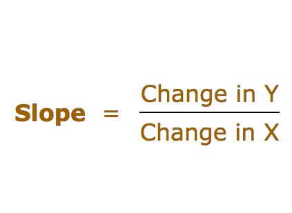
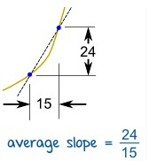
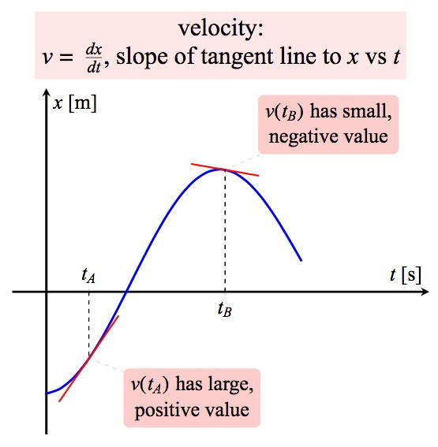
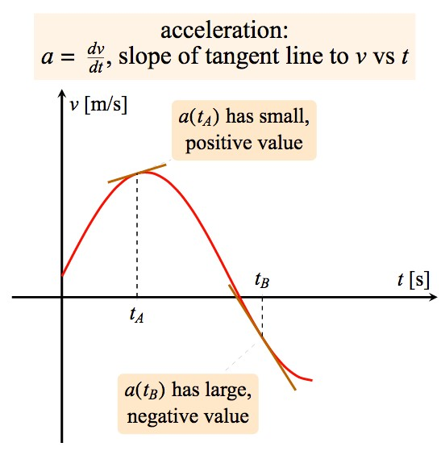

The slope of a line is the ratio of the amount that y increases as x increases some amount. Slope tells you how steep a line is, or how much y increases as x increases. The slope is constant (the same) anywhere on the line. You can use slope to estimate how “steep” a curve in the x-y cartesian plane is. You do this by choosing 2 points on the curve and find the change in Y and the change in X, and divide the two to get the slope. Where you choose your Y and X points affects the slope you get for the curve. An example is shown below.
 Derivatives are slopes that use an infinitely small change in the x-direction. The purpose of derivatives is to find exactly how steep a curve is at a specific point in the graph. To do this, you start by finding the slope around an area, and then shrink the change in X until it shrinks to zero.
The approach of shrinking X to zero was used by Newton in the development of his Classical Mechanics. The main idea is the concept of velocity and speed. Indeed, assume you are traveling from point A to point B, what is the average velocity during the trip? The average velocity is just a slope, where change in Y is distance from A to B and change in X is time to get from A to B. It is given by
If we now assume that A and B are very close to each other, we get close to what is called the instantaneous velocity, which is literally the derivative of motion. Of course, if A and B are close to each other, then the time it takes to travel from A to B will also be small. Indeed, assume that at time t=a, we are at A. If the time elapsed to get to B is Δt, then we will be at B at time t = a + Δt. If Δs is the distance from A to B, then the average velocity, or slope, is
The instantaneous velocity (at A), or derivative, will be found when Δt gets smaller and smaller. Here we naturally run into the concept of limit and this is where the derivative comes from. Indeed, we have
If f(t) describes the position at time t, then Δs = f(a + Δt) - f(a). In this case, we have
Example. Let’s practice finding the derivative of an equation dealing with motion. Consider the parabolic motion given by the function f(t) = t2. Here f(t) is like Y and t is like X. The derivative at t=a is found by finding the limit of Δt reaching zero. This is written as
Since
we conclude that the derivative, which has Δt reach zero, at t=a is 2 a. Note that this is also the instantaneous velocity at t=a.
This concept of derivative, which relates motion to instantaneous velocity, may be extended to find the rate of change of any variable with respect to any other variable. For example, the volume of a gas depends on the temperature of the gas. So in this case, the variables are V (for volume) as a function of T (the temperature). In general, if we have y = f(x), then the average rate of change of y with respect to x, also known as the slope, from x = a to x = a + Δx where Δx ≠ 0 is
Velocity is defined as the rate of change of position. In one dimension, or straight line motion, if x(t) indicates the position then v(t)=dx/dt. Alternately the velocity at a particular moment can be represented by the slope of the graph of the object's position vs. time, evaluated at that moment. Colloquially, the word "motion" means a change of position, and in physics when we discuss the "motion" of an object we are referring to its velocity (and its angular velocity if it is not a point particle).
Acceleration of a moving object is defined as the rate of change of velocity. This is the second derivative of position or, in one dimension, a=d2x/dt2=dv/dt. Considering the graphical representation again, the acceleration of an object moving in the x-direction can be determined by finding the slope of the velocity vs. time graph at the moment of interest, or the curvature of a position vs. time graph.
